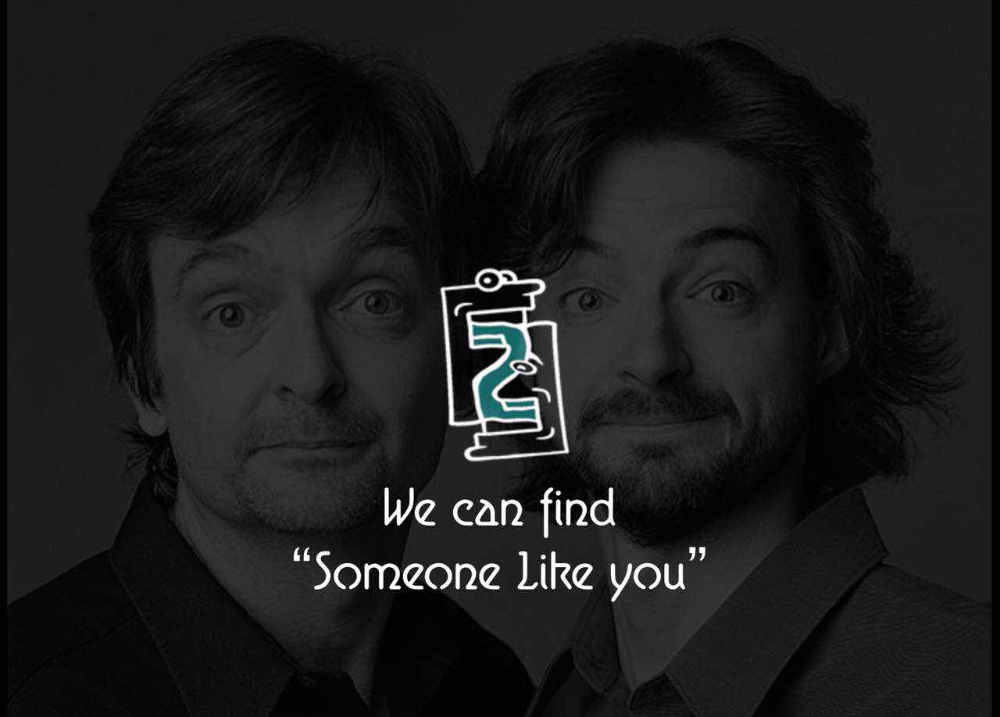

segmentfault 2015 hackathon活动总结
begin:

{
一直关注着segmentfault社区，感觉举办的hackathon活动不错，自己也一直想找个机会参加体验一把;
看到segmentfault在今年1024节举办hackathon活动，果断报名了，现场气氛很嗨，凌晨3-4点大家都
还在coding，自己在1点过去帐篷休息了2个小时左右，必须吐槽下梦想小镇的蚊子太厉害了,下次参加一定要带花露水，哈哈;
现场也长姿势了，了解了leet语言，从一个不合格的hackation，到现在算入门了，哈哈;
}
{
我们团队共5人（@小峰 @Saber @SOHIGH @大花猫 @宅男小何），但是有一位大神（@大花猫）没来现场;
我们团队是临时组建的，在群里瞎BB组起来的，其中;
@小峰 负责前端android开发;
我（@宅男小何）负责后端java开发;
@Saber 负责打杂哈哈（这位小伙子是做手机游戏的，很牛逼，估计多金，但是我们做的不是游戏所以委屈打打杂） ;
@SOHIGH 这位90后帅小伙负责UI做图片;
根据我们的一个idea，对名取为F2F，可以理解为face to face ，也可以理解为f二f（据说隐隐同学是这么叫的）;
}
{
介绍下我们团队的作品吧：
这个idea是现场我们团队讨论时候小鲜肉@SOHIGH提出的，让一群长的很相似的人聚起来聊天（face to face）， 做一个开放式的兴趣交友聊天;
现场我们只做出来了一个小demo，很多想法无法展现;
主要用到的技术:
1. 人脸识别，相似度识别等都基于face++ open api ,这货还是 @大花猫 远程指导知道的，哈哈;
2. 聊天基于阿里百川SDK，小demo是实现了一对一聊天的。
遇到的难点:
1.临时组队，互相交流和特长了解不够，这方面其实是一个难点;
2.android 通过前置摄像头采集头像传输，我们商量后用的是base64编码传输，比简单，但是在android encode后，server无法decode，这个问题也卡了很久;
3.在采集头像确定的时候，不知道为什么会有double 次回调服务器端接口的问题，暂未解决;
4.还有些前端ui界面的一些问题。
}
{
总结下：
虽然作品两点不多，没获奖，但是这次hackathon下来学到很多，认识了一帮志趣相投的鲁友;
这次hackathon，@小峰 的工作量最大，幸苦了，我后端coding工作量1小时不到的样子，算是打酱油了;
现场很多很棒的作品和idea，程序猿们创造力太牛逼，希望以后segmentfault多举办类似的活动;
感谢segmentfault社区举办这么好的hackathon活动，以后有机会还会参加的;
}